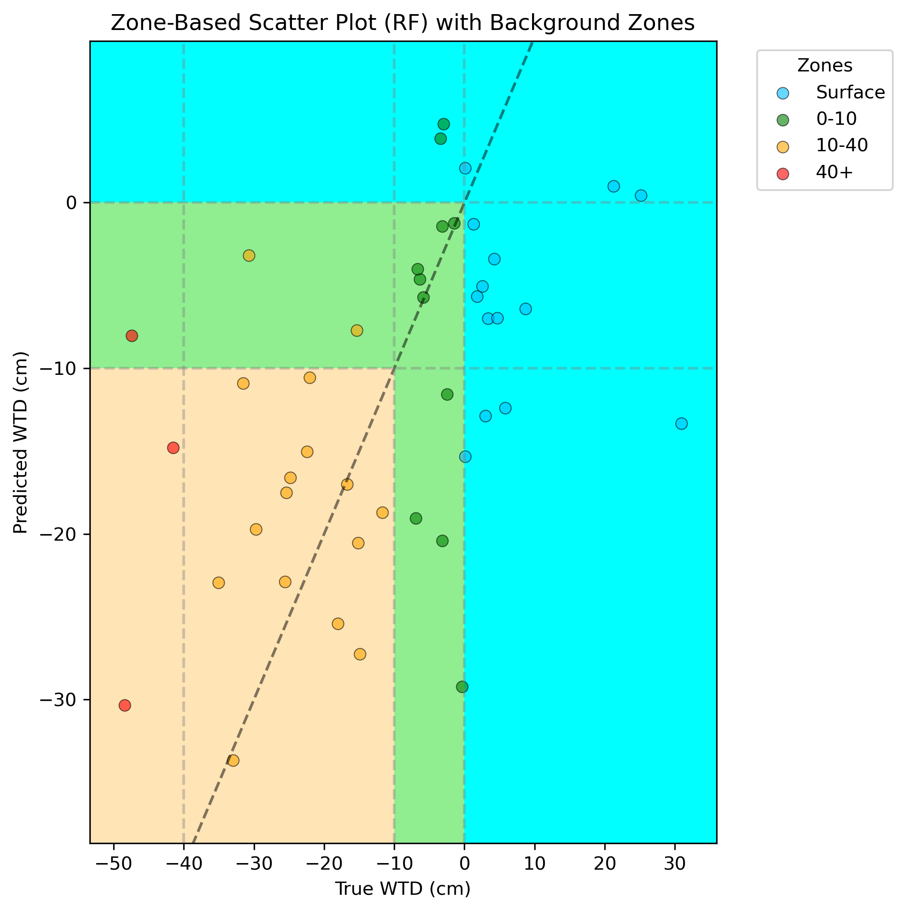

Modular, scalable, and adaptive monitoring and modelling for peatland and woodland carbon projects
Science-led monitoring, reporting, and verification (MRV) you can trust, no matter the budget.
Science-led monitoring, reporting, and verification (MRV) you can trust, no matter the budget.
A short overview of our mission, our monitoring approach, and how Cwiri supports nature-based carbon projects.

On-ground instrumentation and Earth Observation provide continuous, scalable insights into environmental metrics related to GHG balance, habitat condition, and restoration success.
Validated carbon and hydrological models quantify emissions, restoration impact, and long-term site trajectories.

Dashboards and reporting outputs provide transparent, repeatable reporting aligned with the Peatland Code and Woodland Carbon Code.
Cwiri provides tiered monitoring services tailored to your project that matches the budget and level of assurance you desire. Our adaptive framework ensures your monitoring evolves with the changing conditions, circumstances, and priorities of your project. Our approach maximises the cost effectiveness of your data, and makes sure you only pay for what's needed.

Tell us about your site, timeline, and reporting goals, and we will recommend a monitoring setup that balances confidence, budget, and delivery speed.
Prefer email first? Share your project outline and we will respond with suggested options.